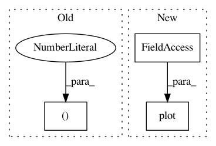

5196910e726c04648f5cffae5f50ecd3171539ce,neurodsp/plts/filt.py,,plot_frequency_response,#,11
Before Change
w_vals, h_vals = signal.freqz(b_vals, a_vals)
// Plot frequency response
plt.figure(figsize=(10, 5))
plt.subplot(1, 2, 1)
plt.plot(w_vals * fs / (2. * np.pi), 20 * np.log10(abs(h_vals)), "k")
plt.title("Frequency response")
After Change
if not ax:
_, ax = plt.subplots(figsize=(5, 5))
ax.plot(f_db, db, "k")
ax.set_title("Frequency response")
ax.set_xlabel("Frequency (Hz)")
ax.set_ylabel("Attenuation (dB)")
In pattern: SUPERPATTERN
Frequency: 3
Non-data size: 3
Instances
Project Name: neurodsp-tools/neurodsp
Commit Name: 5196910e726c04648f5cffae5f50ecd3171539ce
Time: 2019-03-17
Author: tdonoghue@ucsd.edu
File Name: neurodsp/plts/filt.py
Class Name:
Method Name: plot_frequency_response
Project Name: nilmtk/nilmtk
Commit Name: a408b63b2f2b82f498f13d3ba987722ba154e64a
Time: 2014-12-19
Author: jack-list@xlk.org.uk
File Name: nilmtk/stats/goodsectionsresults.py
Class Name: GoodSectionsResults
Method Name: plot
Project Name: metagenome-atlas/atlas
Commit Name: dd6190e78c5e8ac449c2b899045b6666dcd1fb3f
Time: 2018-05-25
Author: silas.kieser@gmail.com
File Name: atlas/report/qc_report.py
Class Name:
Method Name: get_pe_read_quality_plot